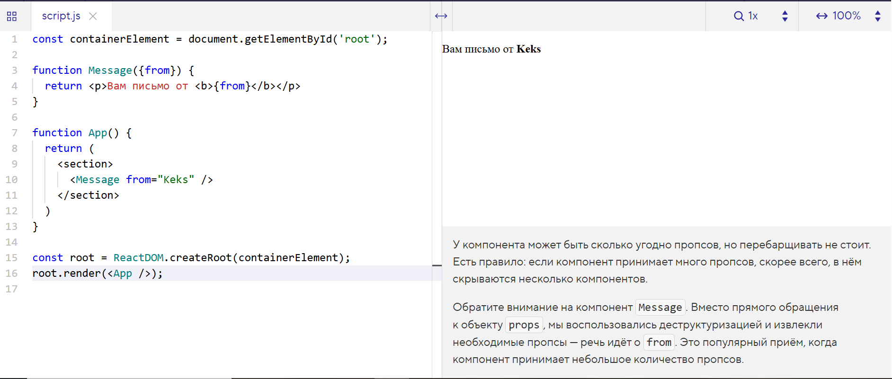

У компонента может быть сколько угодно пропсов, но перебарщивать не стоит. Есть правило: если компонент принимает много пропсов, скорее всего, в нём скрываются несколько компонентов.
Обратите внимание на компонент Message. Вместо прямого обращения к объекту props, мы воспользовались деструктуризацией и извлекли необходимые пропсы — речь идёт о from. Это популярный приём, когда компонент принимает небольшое количество пропсов.
